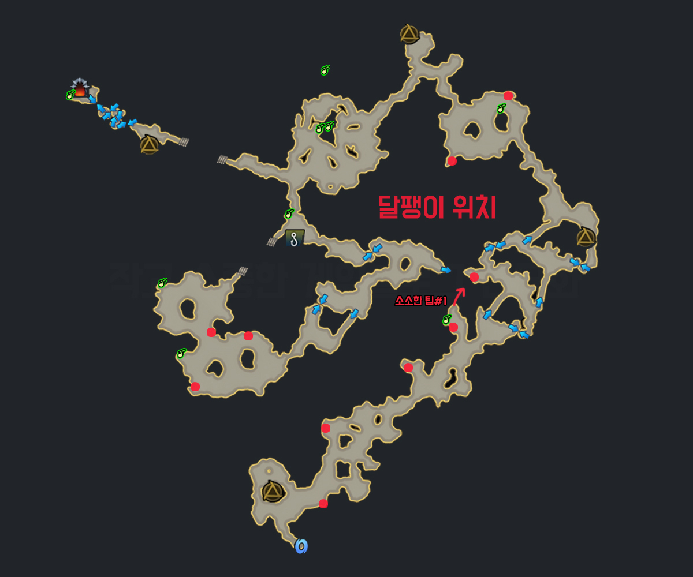
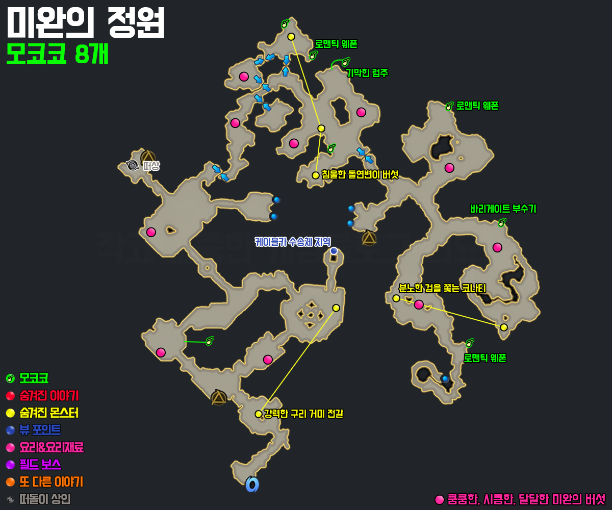
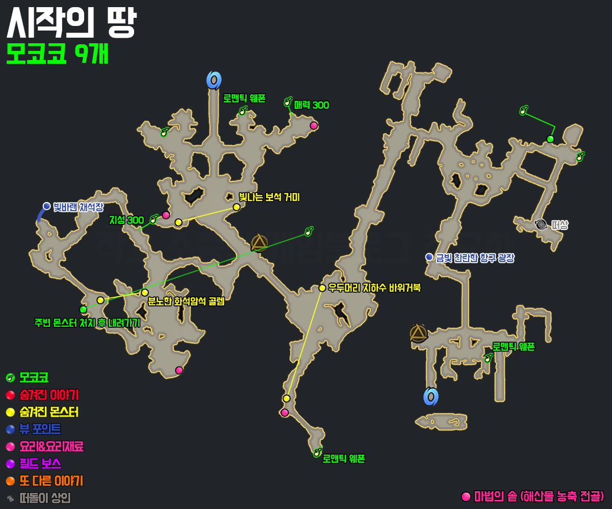
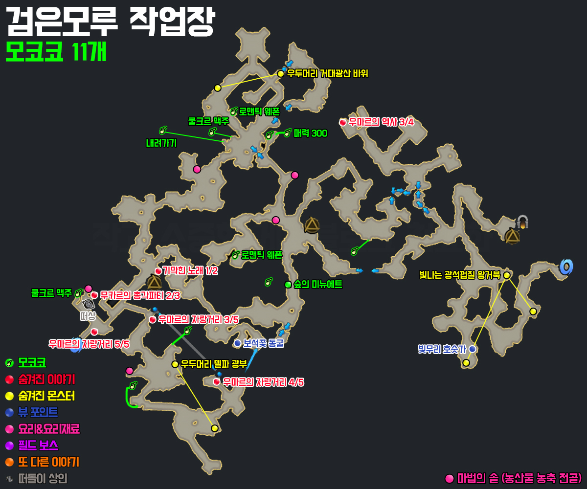
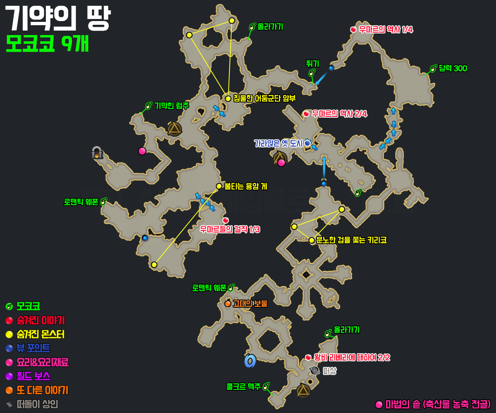
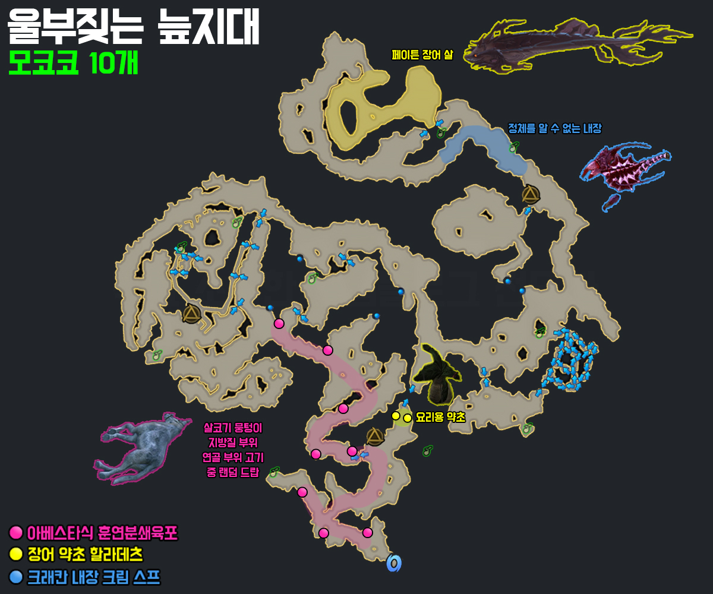
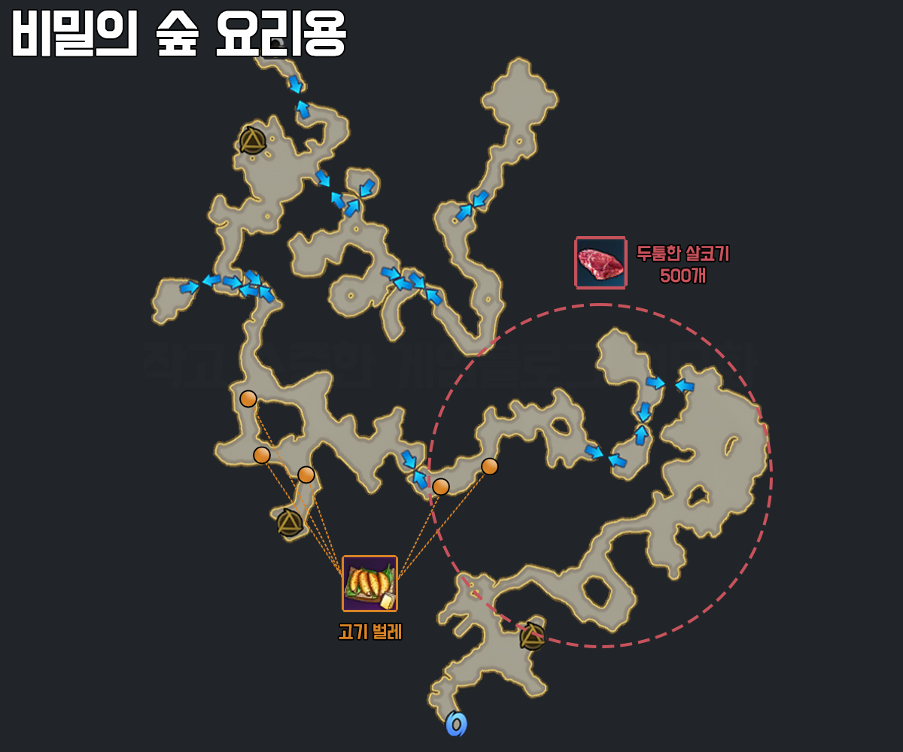
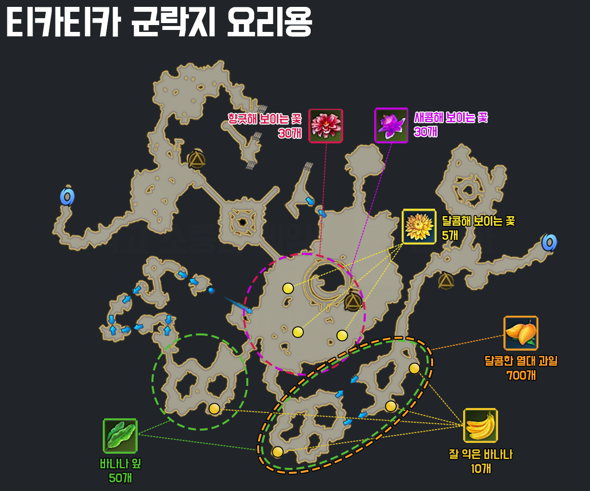

모험의 서📖
베른 북부
프록시마 코스요리
ㄴ프록시마 줄기, 프록시마 뿌리 - 라니아 마을 '루이지아'에게 구매
ㄴ프록시마 샐러드, 프록시마 뿌리완자 - 베른 성 '스텔리아'에게 제작
ㄴ자연산 프록시마 외피 - 필드보스 '프록시마' 처치 시 확률로 획득
여왕폐하 무병장수하소서!
ㄴ페스나르 독버섯 전골을 제외한 5개의 요리로 만듭니다
로헨델
에테르 정수
ㄴ푸른 정기 - 로아룬 재료 상인 '에이자'에게 구매
ㄴ발효 촉진 마법가루 - 에포나 '장난꾸러기 요정' 15회 달성 보상
ㄴ상용 후 에일라라에게 리필 가능
두키두키 스프
ㄴ사로잡힌 두키의 눈물 - 바람향기 언덕
ㄴ마력이 깃든 스프 - 에포나 '봉인지 복구 작업' 7회 달성 보상

제크바스
정화된 연꽃수 - 유리연꽃 호수
ㄴ오염된 첫번째 정령식 - 파괴된 제나일
ㄴ오염된 두번째 정령식 - 엘리트 몬스터 처치 시 확률 획득
ㄴ오염된 세번째 정령식 - 필드 보스 하르마게돈 처치 시
달팽이 롤케이크
ㄴ케이크 제작 비법 - 오렐다 신뢰 보상
ㄴ마법 달팽이 100마리, 마법 알비노 달팽이 1마리 - 엘조윈의 그늘
ㄴ마법 달팽이 100마리와 마법 알비노 달팽이 1마리 교환 가능

욘
쿨크르 맥주
ㄴ낡은 부츠 - 검은모루 작업장 에포나 '시끄럽고,울리고,어지럽고!' 15회 평판 보상
ㄴ수제 맥주 - 일반 퀘스트'답은 가까운 곳에'
ㄴ사용 후 배쥬르에게 리필 가능
광차 도시락
ㄴ햄 종합 광차세트 - 욘 위대한 성 '네리아' 호감도 신뢰 보상
최고급 버섯 볶음
ㄴ쿰쿰한 미완의 버섯 30개
ㄴ시큼한 미완의 버섯 10개
ㄴ달달한 미완의 버섯 5개
ㄴ분홍 버섯 볶음 소스 - 필드 보스 '티파니' 처치 후 확률 드랍

위대한 전골
ㄴ해산물 농축 전골 - 고급 수입 해산물로 '시작의 딸 곳곳의' 마법의 솥에서 일정 확률로 획득
ㄴ농산물 농축 전골 - 고급 수입 농산물로 '검은모루 작업장' 마법의 솥에서 일정 확률로 획득
ㄴ축산물 농축 전골 - 고급 수입 축산물로 '기약의 땅' 마법의 솥에서 일정 확률로 획득



페이튼
크래칸 내장 크림 스프
ㄴ요리로 사용할 수 있을 것 같은 내장 50개
ㄴ질 좋은 내장 10개
ㄴ정체를 알 수 없는 내장 - 울부짖는 늪지대의 변이된 늪지 크래칸 처치 후 드랍

장어 캐비어 샐러드
ㄴ장어 캐비어 1개 - 필드 보스 '안켈라두스' 처치 후 드랍
ㄴ평원초 5개 - 요리 재료 상인 '이오드'에게 신선한 채소 보급품 구매 후 사용
ㄴ습지 이끼 15개 - 요리 재료 상인 '이오드'에게 신선한 채소 보급품 구매 후 사용
ㄴ덩굴바늘풀 30개 - 요리 재료 상인 '이오드'에게 신선한 채소 보급품 구매 후 사용
파푸니카
고기 벌레
ㄴ비밀의 숲 특정 시역 탐색 시 확률 드랍

야생 바나나 빵
ㄴ장 릭은 바나나 10개 - 티카티카 군락지 '불안해 보이는 오랑우탄 대장' 처치 후 낮은 확률로 드랍
ㄴ잘 숙성된 반죽 1개 - 잘 익은 바나나 10개로 '구운 바나나 가루'를 제작하면 12시간 뒤 반죽으로 변화
